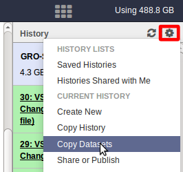

Now you can copy any file(s) from the chosen Source History to the chosen Destination History:

Tool remains in "NEW" state (stays grey) because of missing metadata
» tools stay in new state if metadata did not complete.
Users should set metadata manually by editing it using the pensil-symbol beside the result-to-be in the history.
My tool is not listed
» If you can't find a tool - use the search field (left top corner of GALAXY) to look for it by typing in a keyword:
Broken pipe error
»Sometimes the error "Broken pipe" occurs. In this case just rerun the tool. If the tool permanently gives the same error there might be a network problem - In this case please contact Ido Tamir.
My pushed data from the QUEUE didn't appear on GALAXY
»There might be a problem if you have several accounts on the QUEUE, usually it only works with one of the account. Please try each one and in case it still doesn't work please contact Ido Tamir.
My pushed data from the QUEUE appears in a new history
»The file you pushed will appear in a new history of your GALAXY-account.
In case you want to work in another history you can copy your pushed files by going to
the gear wheel icon
at the very top right corner of the history-panel of GALAXY and
choose "Copy Datasets" from the drop-down-menu:

Now you can copy any file(s) from the chosen Source History to the chosen Destination History:
My file can't be uploaded
You used the GALAXY-tool GALAXY
STANDARD / Get Data / Upload File from your computer but the file doesn't upload. This
file should have less than 2GB of memory otherwise it will not be uploaded!!!
In this case push the from your queue or upload it to GALAXY via a link if possible.